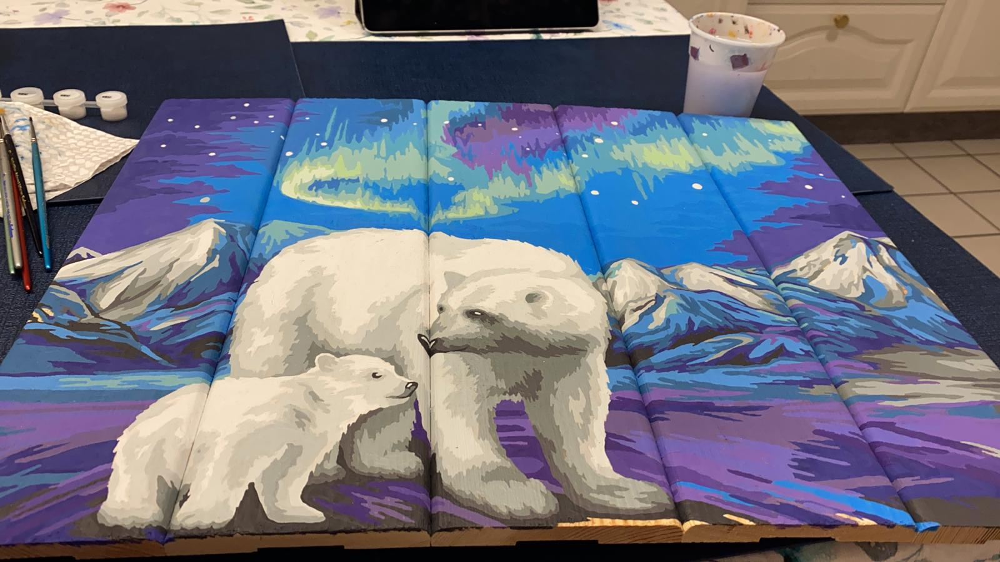

Мое хобби - это рисование по цифрам, по типу детских раскрасок, но со сложными сюжетами. Это очень помогает расслабиться после тяжелого рабочего дня (особенно с бокальчиком красного сухого).
На сегодняшний день я нарисовала 2 картины: одну на дереве, одну на картоне. На деревянной картине нарисованы белые медведи (см. картинку выше), на другой - бокалы разного вина.